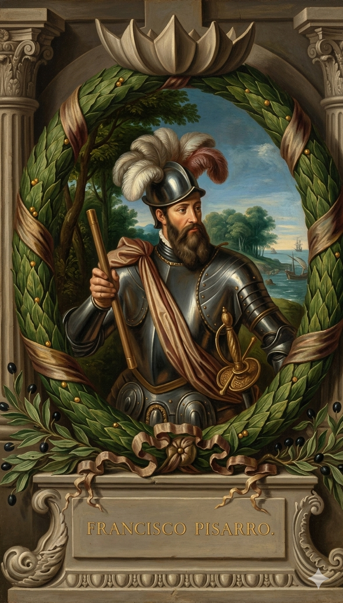

פרנסיסקו פיסארו

לחץ על התמונה להגדלה
מקור ומשמעות השם המלא (אטימולוגיה)
שם פרטי: פרנסיסקו (Francisco)
השם "פרנסיסקו" מגיע מהשם הלטיני המאוחר Franciscus, שפירושו המקורי היה "איש פרנקי" (צרפתי) או "איש חופשי".
הקשר תרבותי: השם הפך לפופולרי מאוד ברחבי אירופה הקתולית בעקבות פרנציסקוס מאסיזי (St. Francis of Assisi), הקדוש הנוצרי שדגל בעוני, בצניעות ובאהבת החי. באופן אירוני ומצמרר, פרנסיסקו פיסארו ייצג בדיוק את ההפך הגמור: תאוות בצע קיצונית, רצח ואכזריות נטולת רסן.
שם משפחה: פיסארו (Pizarro)
זהו שם משפחה ספרדי שמקורו כנראה בשפה הבאסקית או הקסטיליינית העתיקה.
פירוש ובלשנות: השם נגזר מהמילה הספרדית "Pizarra", שפירושה צפחה (Slate) – סוג של סלע. השם ניתן במקור לאנשים שגרו ליד מחצבות צפחה או שעסקו בכרייה וחציבה של אבן זו. השם מעיד על מוצא פשוט ומעמד פועלים, בניגוד לשמות אריסטוקרטיים של קונקיסטאדורים אחרים.
ילדות קשה: הממזר, רועה החזירים והאנאלפבית
פרנסיסקו פיסארו נולד בעיר טרוחיו (Trujillo) שבחבל אקסטרמדורה בספרד (אותו חבל צחיח ועני שממנו יצא גם הרנאן קורטס). אולם, בניגוד לקורטס שהיה אציל משכיל, נקודת הפתיחה של פיסארו הייתה נמוכה וקשה בהרבה.
הסטיגמה של הממזרות: הוא נולד כבן מחוץ לנישואין (ממזר) לקולונל חיל רגלים ספרדי בשם גונסאלו פיסארו רודריגז דה אגילאר, ולאישה ענייה ממעמד נמוך בשם פרנסיסקה גונסאלס. כילד לא חוקי, הוא לא זכה לשום חינוך או תמיכה מבית אביו.
הבורות: פיסארו מעולם לא למד קרוא וכתוב. הוא נשאר אנאלפבית עד יומו האחרון, ונאלץ להיעזר תמיד בסופרים ופקידים כדי לחתום על חוזים. בילדותו הוא עבד למחייתו כרועה חזירים בשדות הצחיחים של אקסטרמדורה. הדרך היחידה שלו להימלט מחיי עוני והשפלה חברתית הייתה להצטרף לצבא הספרדי, ומאוחר יותר להפליג לעולם החדש (הוא הגיע לאי היספניולה כבר ב-1502).
אידאולוגיה, מניעים ותפיסת עולם
אם קולומבוס הונע מלהט משיחי, וקורטס מגאונות פוליטית ואסטרטגית, המניע של פיסארו היה פשוט וישיר הרבה יותר:
1. תאוות בצע ומוביליות חברתית: האידאולוגיה העיקרית של פיסארו הייתה למחוק את חרפת ילדותו. הוא רצה להוכיח לעולם, ולמשפחת אביו, שהוא מסוגל להפוך לאיש העשיר והחזק ביותר באימפריה. הוא חיפש זהב, והרבה ממנו. האכזריות שלו כלפי הילידים לא נבעה מ"מלחמת קודש" דתית (כמו אצל קורטס), אלא מפרגמטיזם קר וציני של שודד.
2. השותפות האסטרטגית (חברת הלבנט): פיסארו לא פעל לבד. בפנמה הוא הקים שותפות חוזית עם קונקיסטאדור נוסף, דייגו דה אלמגרו (Diego de Almagro), ועם הכומר הרננדו דה לוקה. הם קראו לעצמם "חברת הלבנט" (Empresa del Levante). ההסכם ביניהם היה פשוט: פיסארו יפקד על הצבא, אלמגרו ידאג ללוגיסטיקה, אספקה ותגבורת, והכומר יגייס את המימון והקשרים הפוליטיים. הבטחתם הייתה לחלק כל שלל שיימצא שווה בשווה – הבטחה שהפרתה תוביל מאוחר יותר למרחץ דמים ביניהם.
נסיבות היסטוריות: כיצד מרד במושל הפך למינוי מלכותי?
ההשראה הגדולה של פיסארו הייתה ההצלחה הפנומנלית של קרוב משפחתו הרחוק, הרנאן קורטס, במקסיקו. פיסארו שמע בפנמה שמועות מהילידים על אימפריה עשירה בהרים מדרום שנקראה "בירו" (Birú - לימים פרו). אולם, הדרך לכיבוש עברה קודם כל במרד פוליטי.
זהו הרגע שבו פיסארו המרה פקודה באופן גלוי. באקט ציורי, הוא שרטט קו בחול עם חרבו ואמר: "שם דרומה מחכה פרו עם העושר שלה; כאן פנמה עם העוני שלה. יבחר כל איש את מה שהולם קסטיליאני אמיץ". רק 13 אנשים (המוכרים כ"לוס טרסה דה לה פאמה") חצו את הקו ונשארו איתו, בעוד השאר חזרו. מבחינת המושל, פיסארו היה כעת עריק מורד.
פיסארו נסע פיזית לספרד. הוא לא הגיע בידיים ריקות, אלא הביא איתו לאמות חיות, ילידים פרואנים בבגדי צמר, ותכשיטי זהב נוצצים מהעיר טומבס. למזלו, בקיץ 1528 בעיר טולדו, הוא זכה להציג את השלל בפני הקיסר קרל החמישי. הקיסר התרשם עמוקות, במיוחד משום שבאותו זמן בדיוק ביקר בחצר הרנאן קורטס, שהביא אוצרות ממקסיקו. הקיסר הבין שפיסארו עשוי להיות "קורטס השני" שלו.
בזמן שפיסארו התארגן, אימפריית האינקה הייתה בשעתה הקשה ביותר. מגפת האבעבועות השחורות (שהקדימה את בואם של הספרדים) הרגה את הקיסר הקודם, מה שהוביל למלחמת אזרחים אכזרית בין שני בניו, הואסקר ואטאוואלפה (Atahualpa). כלימודי קורטס, פיסארו ידע שזו שעת הכושר להכות באימפריה מפולגת.
הכיבוש: המלכודת בקחאמרקה וחדר הכופר (1532-1533)
בשנת 1532, פיסארו נחת בפרו והחל לטפס אל הרי האנדים הגבוהים. הכוח שלו היה זעיר ומגוחך: 168 חיילים בלבד, מתוכם 62 פרשים עם סוסים, ו-27 רובי ארקבוז. מולם עמדה אימפריית האינקה המנצחת בראשות הקיסר אטאוואלפה, שהקים מחנה בעיר קחאמרקה עם צבא של כ-80,000 לוחמים.
זו הייתה העילה שפיסארו חיכה לה. בהינתן האות, הספרדים פתחו באש תותחים ורובים אל תוך ההמון הצפוף מטווח אפס, והפרשים הסתערו. החרדה מפני הסוסים ורעש אבק השריפה יצרו פאניקה המונית. אלפי אינדיאנים נטבחו מבלי שהספרדים איבדו איש. פיסארו עצמו תפס את אטאוואלפה במו ידיו ולקח אותו בשבי.
במשך חודשים, שליחי האינקה הפשיטו מקדשים ברחבי האימפריה והביאו טונות של יצירות אמנות מזהב (אותן התיכו הספרדים למטילים). זה היה הכופר הגדול ביותר בהיסטוריה האנושית (מוערך כיום במאות מיליוני דולרים).
אולם, ברגע שהזהב נאסף, פיסארו הפר את הבטחתו. מתוך חשש שאטאוואלפה מארגן מרד, הוא ערך לו משפט ראווה מהיר, הרשיע אותו בעבודת אלילים ופוליגמיה, ודן אותו לשריפה על המוקד. מכיוון שהאינקה האמינו ששריפת הגופה מונעת חיי נצח, אטאוואלפה הסכים ברגע האחרון להתנצר בתמורה להוצאה להורג בחניקה. הוא נחנק למוות (בגרדוט - Garrote) ב-26 ביולי 1533. עם מותו, האימפריה קרסה, ופיסארו צעד כמנצח לבירה קוסקו (Cuzco).
השפעות היסטוריות והמוות העקוב מדם (1541)
פיסארו הקים בשנת 1535 את עיר הבירה החדשה על החוף, לימה (Ciudad de los Reyes - עיר המלכים), מכיוון שקוסקו הייתה גבוהה ומבודדת מדי בהרי האנדים. אבל העושר האדיר שזרם לספרד רק זרע את זרעי הפורענות בין הקונקיסטאדורים עצמם.
פיסארו, שהיה כבר בשנות ה-60 לחייו, שלף את חרבו ונלחם באומץ מול המתנקשים, אך ספג דקירות רבות בצווארו ובגופו. אגדה מפורסמת מספרת שברגעיו האחרונים, בעודו גוסס על הרצפה, הוא טבל את אצבעותיו בדם של עצמו, צייר צלב על אבני הרצפה, נישק אותו, ומת. בנו של אלמגרו נתלה גם הוא זמן קצר לאחר מכן על ידי נציגי הכתר הספרדי.
מקורות וביבליוגרפיה (אימות מחקר)
- "היסטוריה של גילוי וכיבוש פרו" (Agustín de Zárate): היסטוריון ספרדי בן המאה ה-16 שתיעד את המבצע הצבאי, חדר הכופר, ואת מלחמת האזרחים המדממת בין פיסארו לאלמגרו.
- מחקר היסטורי אקדמי: Hemming, John (1970). The Conquest of the Incas. (הספר הנחשב למקיף והמדויק ביותר שנכתב במאה ה-20 על הכיבוש, המשלב גם את נקודת המבט האנדית של האינקה).
- תיעוד דרמטי היסטורי: MacQuarrie, Kim (2007). The Last Days of the Incas. (מתאר לפרטי פרטים את הפגישה הגורלית והטבח בקחאמרקה, ואת חוסר ההבנה התרבותי של אטאוואלפה מול חמדנותם של הספרדים).